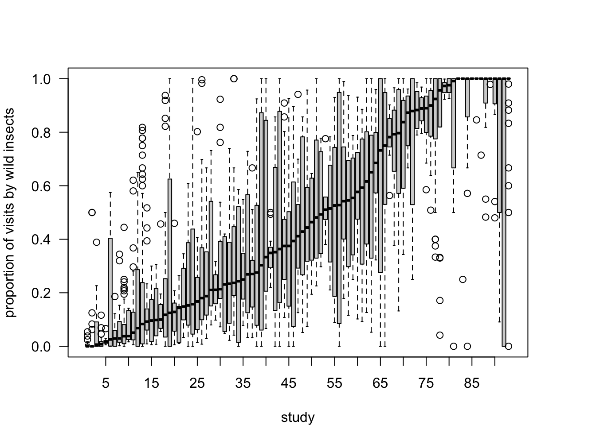
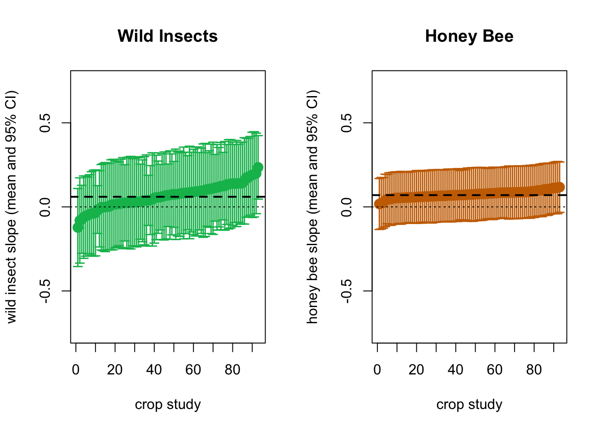

Results
How are the main crop visitors?

Which effect has honeybee and wild pollinator visits on yield?
Linear mixed model fit by REML ['lmerMod']
Formula: yield_z ~ wild_insects_z * honeybee_z + (1 + wild_insects_z |
study_id2) + (1 + honeybee_z | study_id2) + (1 + wild_insects_z *
honeybee_z | study_id2)
Data: field_data8a
REML criterion at convergence: 6391.5
Scaled residuals:
Min 1Q Median 3Q Max
-3.0351 -0.7144 -0.1293 0.6125 4.1745
Random effects:
Groups Name Variance Std.Dev. Corr
study_id2 (Intercept) 0.000e+00 0.0000000
wild_insects_z 1.997e-02 0.1413232 NaN
study_id2.1 (Intercept) 5.473e-08 0.0002339
honeybee_z 6.353e-03 0.0797033 0.51
study_id2.2 (Intercept) 0.000e+00 0.0000000
wild_insects_z 1.125e-02 0.1060468 NaN
honeybee_z 3.986e-02 0.1996596 NaN -0.65
wild_insects_z:honeybee_z 9.877e-03 0.0993821 NaN -0.55 -0.25
Residual 8.821e-01 0.9391851
Number of obs: 2305, groups: study_id2, 93
Fixed effects:
Estimate Std. Error t value
(Intercept) 0.008011 0.019930 0.402
wild_insects_z 0.064095 0.031121 2.060
honeybee_z 0.073825 0.034365 2.148
wild_insects_z:honeybee_z 0.008333 0.024374 0.342
Correlation of Fixed Effects:
(Intr) wld_n_ hnyb_z
wld_nscts_z 0.018
honeybee_z 0.016 -0.202
wld_nsct_:_ -0.053 -0.152 -0.157
optimizer (nloptwrap) convergence code: 0 (OK)
boundary (singular) fit: see help('isSingular')Linear mixed model fit by REML ['lmerMod']
Formula: yield_z ~ wild_insects_z * honeybee_z + wild_insects_z * richness_z +
honeybee_z * richness_z + (0 + wild_insects_z * honeybee_z |
study_id2) + (0 + wild_insects_z * richness_z | study_id2) +
(0 + honeybee_z * richness_z | study_id2)
Data: field_data9a
REML criterion at convergence: 3108.9
Scaled residuals:
Min 1Q Median 3Q Max
-2.7970 -0.6819 -0.1675 0.6067 3.8661
Random effects:
Groups Name Variance Std.Dev. Corr
study_id2 wild_insects_z 0.0218473 0.14781
honeybee_z 0.0045418 0.06739 0.95
wild_insects_z:honeybee_z 0.0086449 0.09298 -1.00 -0.97
study_id2.1 wild_insects_z 0.0252964 0.15905
richness_z 0.0206373 0.14366 -0.72
wild_insects_z:richness_z 0.0037528 0.06126 -0.98 0.83
study_id2.2 honeybee_z 0.0441461 0.21011
richness_z 0.0122239 0.11056 -1.00
honeybee_z:richness_z 0.0006919 0.02630 1.00 -1.00
Residual 0.8287892 0.91038
Number of obs: 1129, groups: study_id2, 63
Fixed effects:
Estimate Std. Error t value
(Intercept) 0.005344 0.031490 0.170
wild_insects_z 0.077929 0.051165 1.523
honeybee_z 0.085143 0.044297 1.922
richness_z 0.036373 0.045712 0.796
wild_insects_z:honeybee_z -0.014780 0.035676 -0.414
wild_insects_z:richness_z -0.033126 0.031353 -1.057
honeybee_z:richness_z 0.005966 0.037111 0.161
Correlation of Fixed Effects:
(Intr) wld_n_ hnyb_z rchns_ wld_nscts_z:h_ wld_nscts_z:r_
wld_nscts_z 0.159
honeybee_z 0.015 0.116
richness_z -0.029 -0.504 -0.313
wld_nscts_z:h_ 0.082 -0.193 -0.138 0.005
wld_nscts_z:r_ -0.451 -0.379 -0.025 0.134 -0.176
hnyb_z:rch_ -0.090 -0.005 0.056 -0.001 -0.477 0.010
optimizer (nloptwrap) convergence code: 0 (OK)
boundary (singular) fit: see help('isSingular')